本页解决什么问题：Get started with the verb-prefix pipeline (
plotit() |> mark_*() |> scale_*()).
Overview
plotit is a declarative plotting package built on
ggplot2. It wraps ggplot2 with a verb-prefix API —
every function starts with a verb that tells you what it does:
mark_*() adds marks, scale_*() controls
scales, label_*() sets labels.
All functions return a plotit object, so you can chain them with
|>:
library(plotit)
iris |>
plotit(encode(x = Sepal.Width, y = Sepal.Length, colour = Species)) |>
mark_point(size = 2, alpha = 0.7) |>
label_title("Iris Sepal Dimensions") |>
label_axis(text = "Sepal Width", aes = "x") |>
label_axis(text = "Sepal Length", aes = "y")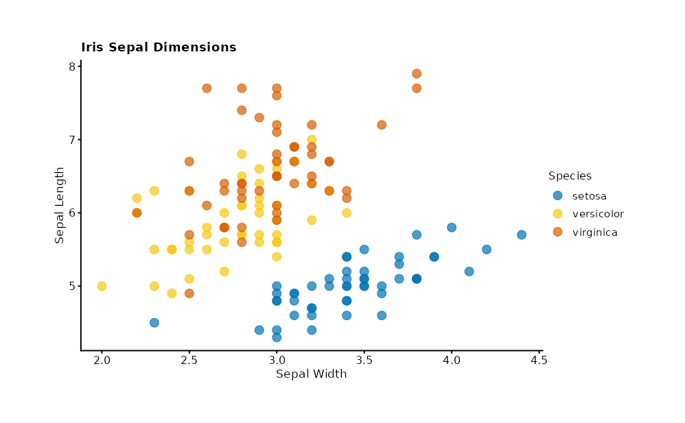
Pipeline Grammar
Every plotit pipeline follows the same grammar:
data |> plotit(encode(...)) |> mark_*() |> scale_*() |> layout_*() |> split_*() |> project_*() |> label_*() |> style() |> export()| Step | Function | Job |
|---|---|---|
| 1. Init | plotit() |
Create plot with data & aesthetics |
| 2. Mark | mark_*() |
Add geometric layers |
| 3. Scale | scale_*() |
Control data-to-visual mapping |
| 4. Layout | layout_*() |
Compute relational layouts (optional) |
| 5. Facet | split_*() |
Split into small multiples |
| 6. Coordinate | project_*() |
Choose a coordinate system |
| 7. Label | label_*() |
Set titles, axis labels, legends |
| 8. Style | style() |
Apply a ggplot2 theme |
| 9. Export | export() |
Render to file |
Function Families
mark_*() — Geometric Layers
Thirty-nine mark functions add visual elements to your plot, spanning
basic geometry (including step lines, ruggeds, spokes and curved links),
distributions (histogram, density, box, violin, beeswarm, ECDF, QQ),
statistical layers (smooth, hex, bin2d, density_2d, contour, correlation
matrices, overlap-aware counts), composite sugar (error bars,
significance brackets, lollipops, dumbbells, forest plots, labels) and
the relational family (sankey, treemap, network, chord). Standard marks
share a unified signature: mapping, data,
position, rasterize, and ...
forwarded to the underlying geom.
# Scatter plot
mtcars |>
plotit(encode(x = wt, y = mpg, colour = factor(cyl))) |>
mark_point(size = 3, alpha = 0.8)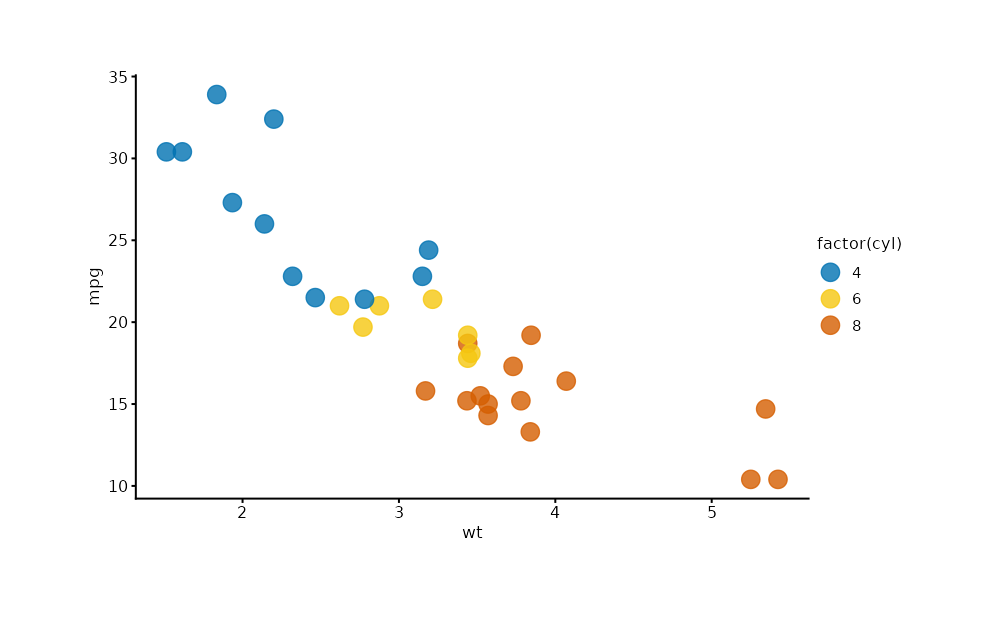
# Bar chart <U+2014> auto-detects geom_col vs geom_bar
iris |>
plotit(encode(x = Species, y = Sepal.Length)) |>
mark_bar()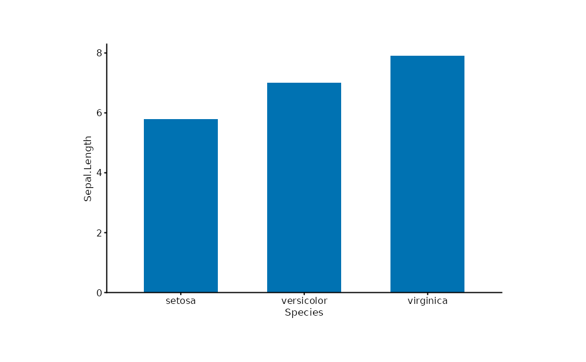
# Boxplot
iris |>
plotit(encode(x = Species, y = Sepal.Length, fill = Species)) |>
mark_boxplot()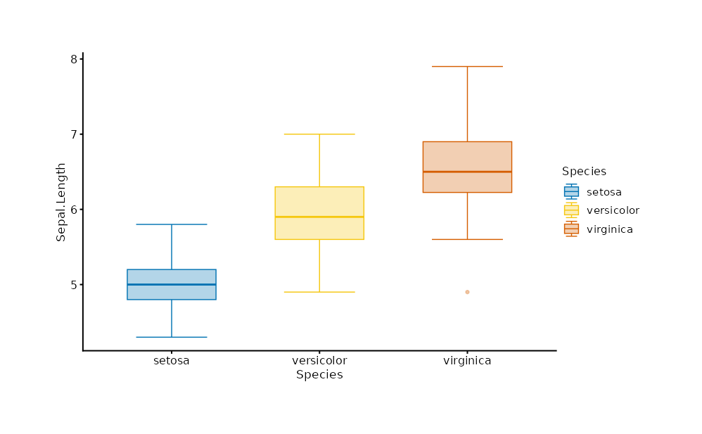
# Histogram
iris |>
plotit(encode(x = Sepal.Length, fill = Species)) |>
mark_histogram(bins = 20, alpha = 0.5)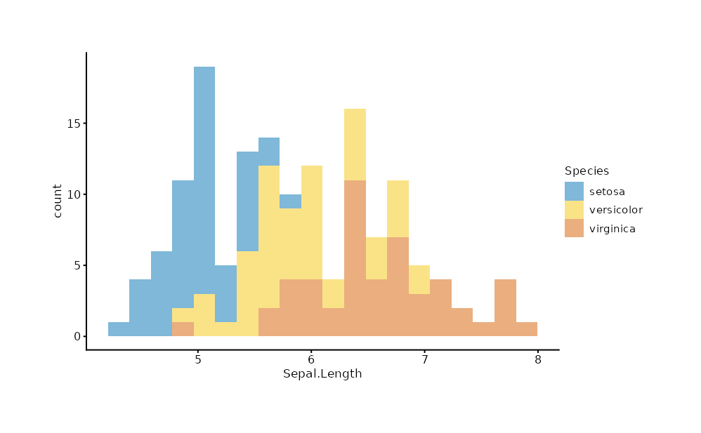
scale_*() — Data-to-Visual Mapping
Eight scale functions, all with identical parameters:
name, trans, limits,
range, breaks, labels, and
....
mtcars |>
plotit(encode(x = wt, y = mpg, colour = hp, size = hp)) |>
mark_point(alpha = 0.7) |>
scale_color(range = "viridis") |>
scale_x(trans = "log10") |>
scale_size(range = c(0.5, 8))
#> Scale for colour is already present.
#> Adding another scale for colour, which will replace the existing scale.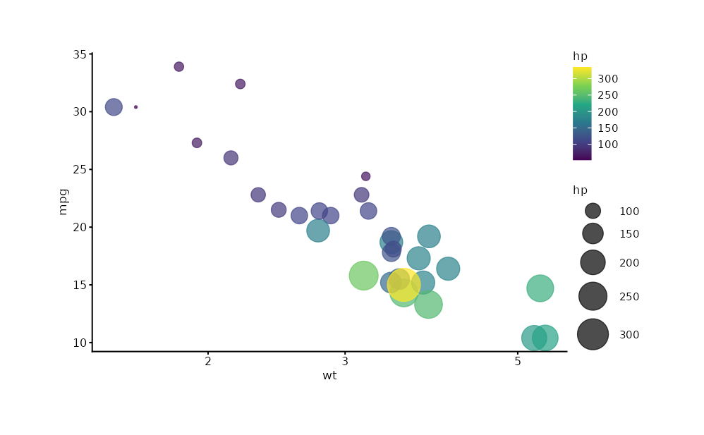
The range parameter accepts colour scheme names
("viridis", "brewer", "hue") or
custom vectors:
mtcars |>
plotit(encode(x = wt, y = mpg, colour = factor(cyl))) |>
mark_point(size = 3) |>
scale_color(range = c("#E41A1C", "#377EB8", "#4DAF4A"))
#> Scale for colour is already present.
#> Adding another scale for colour, which will replace the existing scale.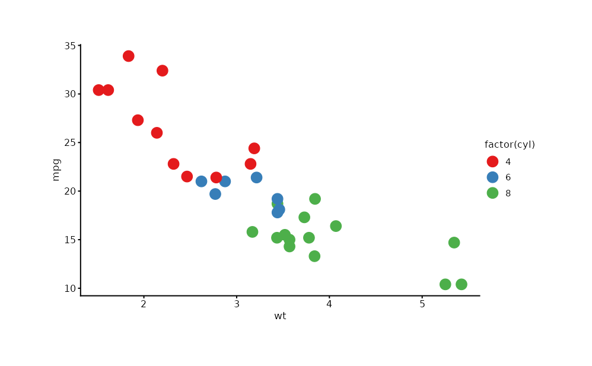
label_*() — Text Labels
Five label functions use a three-parameter protocol:
| Call | Behaviour |
|---|---|
label_*(text = "str") |
Set custom text |
label_*(hide = TRUE) |
Remove element and its space |
label_*(reset = TRUE) |
Restore variable name or remove text |
iris |>
plotit(encode(x = Sepal.Width, y = Sepal.Length, colour = Species)) |>
mark_point() |>
scale_color(range = "brewer") |>
label_title("Iris Measurements") |>
label_subtitle("Anderson's Iris Data") |>
label_caption("Source: R.A. Fisher, 1936") |>
label_axis("Sepal Width (cm)", aes = "x") |>
label_axis("Sepal Length (cm)", aes = "y") |>
label_legend("Species", aes = "colour")
#> Scale for colour is already present.
#> Adding another scale for colour, which will replace the existing scale.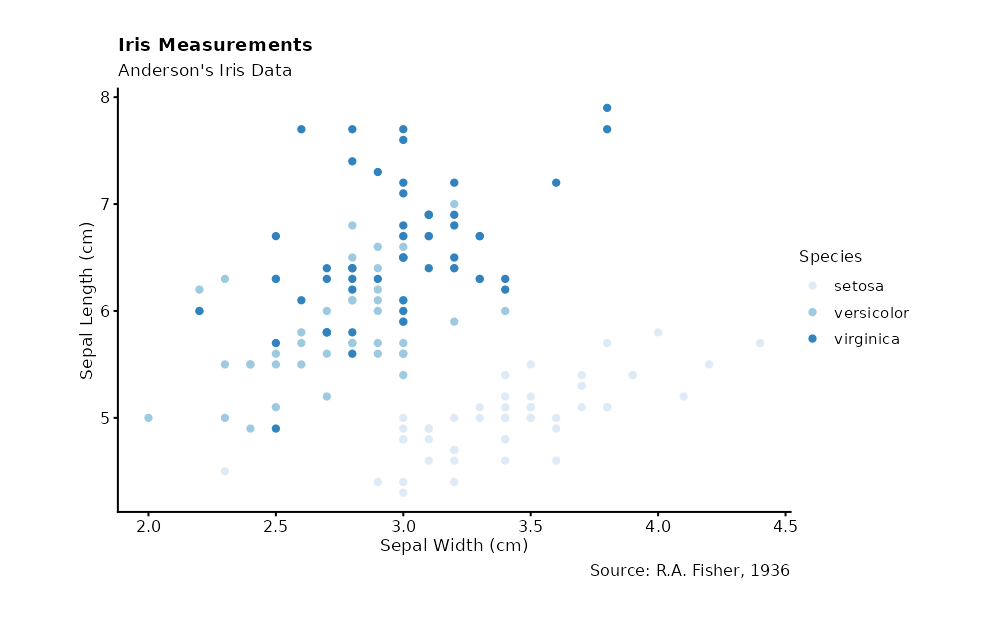
project_*() — Coordinate Systems
# Flipped coordinates
iris |>
plotit(encode(x = Species, y = Sepal.Length, fill = Species)) |>
mark_boxplot() |>
project_cartesian(flip = TRUE)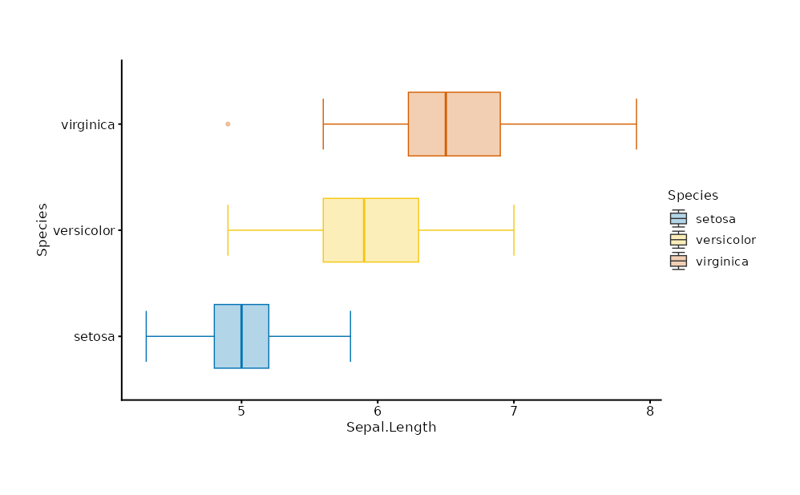
# Zoom via xlim/ylim
mtcars |>
plotit(encode(x = wt, y = mpg)) |>
mark_point() |>
project_cartesian(xlim = c(2, 4), ylim = c(15, 25))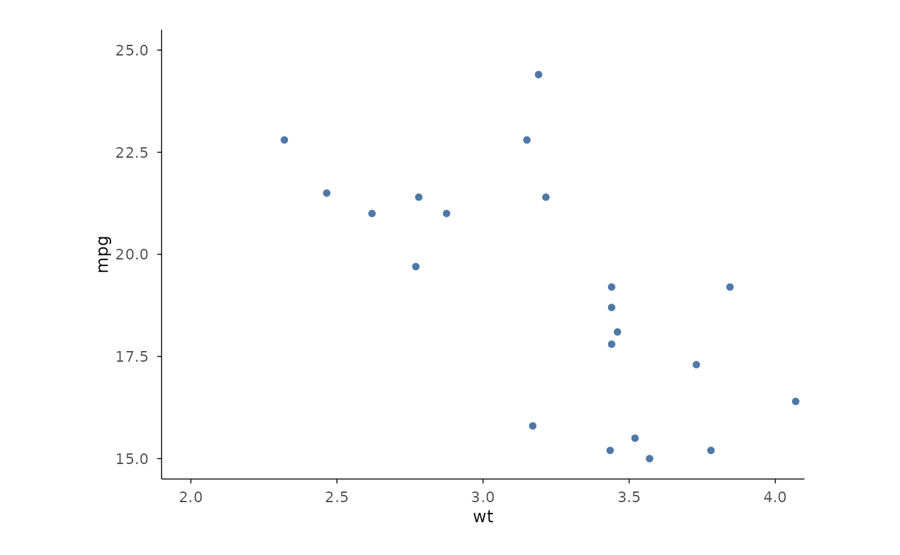
split_*() — Facets
iris |>
plotit(encode(x = Sepal.Width, y = Sepal.Length)) |>
mark_point() |>
split_wrap(Species, ncol = 3)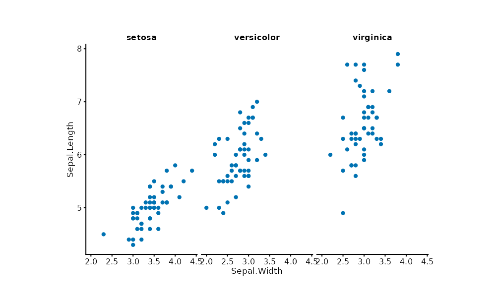
style() — Themes
iris |>
plotit(encode(x = Sepal.Width, y = Sepal.Length, colour = Species)) |>
mark_point() |>
style(base_theme = ggplot2::theme_minimal(base_size = 14))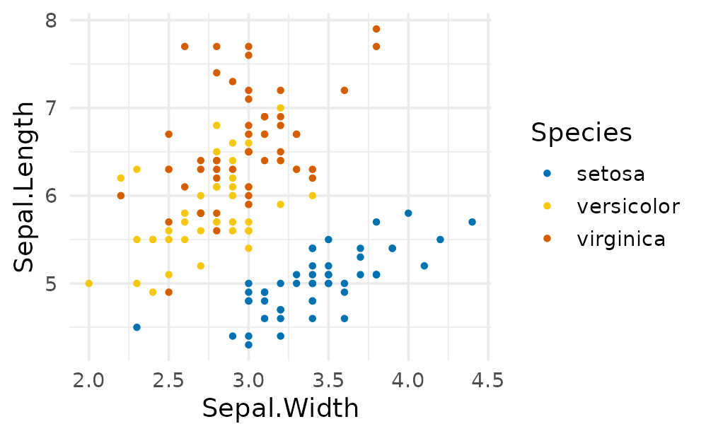
Relational Data
Edge tables can be plotted directly through the graph data family.
Layouts are deterministic data transforms — coordinates are baked into
the tables, and any sub-table (~nodes, ~edges,
~ribbons) can be rendered by a mark:
flows <- data.frame(
source = c("A", "A", "B", "B", "C"),
target = c("B", "C", "C", "D", "D"),
value = c(10, 5, 8, 3, 6)
)
flows |>
plotit(encode(
source = source, target = target,
value = value, fill = source
)) |>
mark_sankey()
#> Coordinate system already present.
#> ℹ Adding new coordinate system, which will replace the existing one.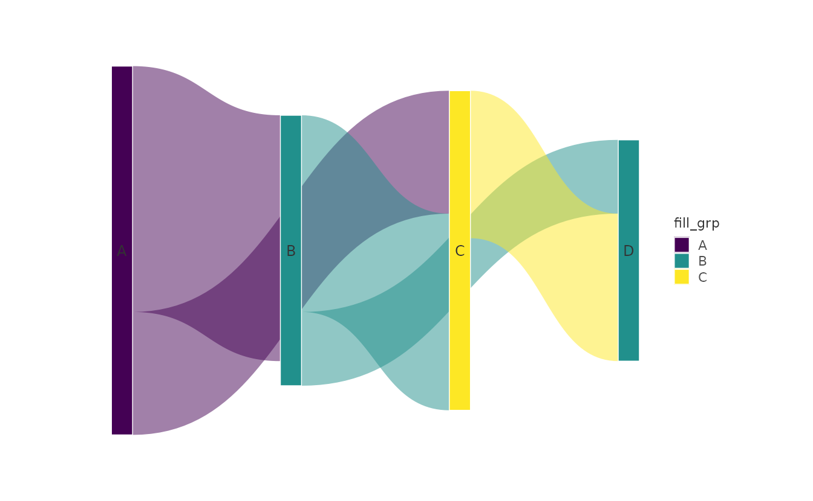
For full control, build the graph explicitly with
as_graph(), apply a layout_*() transform, then
reference its sub-tables from any mark. See ?as_graph and
?layout_force.
Export
p <- mtcars |>
plotit(encode(x = wt, y = mpg, colour = factor(cyl))) |>
mark_point(size = 2) |>
label_title("Fuel Economy")
export(p, "mtcars_plot.png", width = 8, height = 5, dpi = 300)